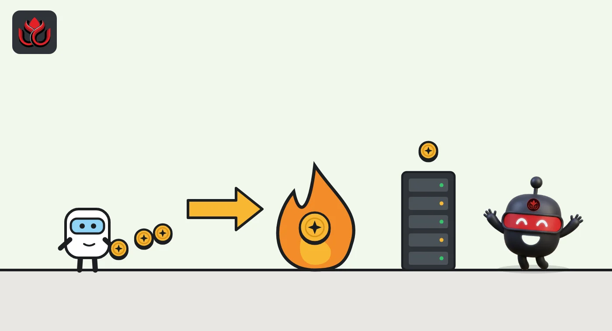
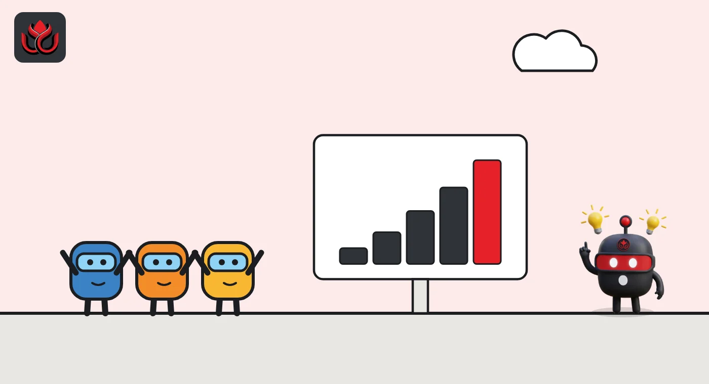

What is a gas fee? How Ethereum fees work, who gets paid and why they spike
A gas fee is what you pay Ethereum to run a transaction: gas used times the base fee plus an optional tip. The base fee is burned, the tip goes to the validator, and the price can climb 12.5% a block when the network gets busy.
Key points
- Your fee is gas used times (base fee plus tip). A plain ETH transfer uses 21,000 gas; a Uniswap swap about 184,523.
- Since the London upgrade of August 5, 2021, the base fee is burned. Only the tip goes to the validator.
- The base fee can rise up to 12.5% per block, so fees jump fast in a rush. On November 2, 2026, Etherscan showed just 0.052 gwei.
What is a gas fee?
Gas is the unit Ethereum uses to measure how much work a transaction asks the network to do. Every step a transaction runs has a set gas cost, and the gas fee is what you pay for all of it. Fees are not fixed: they "change based on network congestion", ethereum.org says.
Prices are quoted in gwei. One gwei is one billionth of an ETH (0.000000001 ETH). Some typical amounts of gas, per ethereum.org:
- Sending ETH: 21,000 gas
- Sending an ERC-20 token: about 65,000 gas
- Sending an NFT: about 84,904 gas
- A Uniswap swap: about 184,523 gas
The amount of gas depends on what you do. The price per unit of gas depends on how busy the network is.
Gas used by common Ethereum actions
gas units
Source: ethereum.org, Ethereum fees
How is a gas fee calculated?
The formula is gas used times (base fee plus priority fee). Ethereum's transaction docs give a worked example. Bob sends Alice 1 ETH when the base fee is 190 gwei and he adds a 10 gwei tip. The fee is 21,000 times 200 gwei, or 4.2 million gwei, which is 0.0042 ETH. Of that, 0.00399 ETH is burned and 0.00021 ETH goes to the validator.
Each transaction carries three settings:
- Gas limit: the most gas it may use. Unused gas is refunded.
- Max priority fee: the most you will tip per unit of gas.
- Max fee: the most you will pay per unit of gas in total, base fee included.
Wallets usually fill these in for you. If the base fee rises above your max fee, the transaction waits until it falls back.

What did EIP-1559 change, and why is the base fee burned?
Before August 2021, users simply bid a gas price and hoped it was enough. The London upgrade, which went live on August 5, 2021, brought in EIP-1559, ethereum.org's history page shows. It split the fee into two parts.
The base fee is set by the protocol, not by users. Blocks aim to be half full: the target is the block gas limit divided by two. When a block uses more than the target, the base fee for the next block goes up. When it uses less, it goes down. The maximum change is one eighth, or 12.5%, per block, per the EIP-1559 specification.
The base fee is burned, so it is destroyed instead of being paid to anyone. That removes ETH from supply each block. The priority fee, or tip, is the only part the validator keeps.
Why do gas fees spike?
Fees rise when more people want block space than the network targets. Ethereum.org points to popular NFT launches, heavy trading and peak hours. The CryptoKitties craze of November 2017 is its classic example. Because the base fee can rise 12.5% a block and gas prices update about every 12 seconds, a rush can lift fees many times over within minutes.
Today is quiet. As of 6:58 a.m. ET on November 2, 2026, Etherscan's gas tracker showed a base fee of 0.052 gwei, with swaps estimated at about $0.04, bridging at about $0.01 and borrowing at about $0.04. At that rate a plain ETH transfer costs 21,000 times 0.052 gwei, about 0.0000011 ETH. That is nearly 4,000 times cheaper than the 200 gwei in ethereum.org's example.
One reason is room. The block gas limit is now 60 million, raised from 30 million during 2025, ethereum.org says. The Fusaka upgrade of December 3, 2025, made 60 million the default and capped a single transaction at about 16.78 million gas. The next upgrade, Glamsterdam, raises gas costs for creating and accessing stored data and has no confirmed mainnet date, ethereum.org's roadmap page says. We covered its testnet schedule in our Glamsterdam story.

How do layer 2 fees work?
A layer 2 runs transactions on its own chain and posts the data back to Ethereum. Its fee has two main parts. On OP Mainnet, the execution fee works like Ethereum's, gas times base fee plus tip, and an L1 data fee covers the cost of publishing your transaction's data to Ethereum, the Optimism docs explain. The data fee depends on Ethereum's fees and on how small your transaction compresses, and the sender cannot cap it. Newer OP Stack versions add an operator fee as well.
Layer 2 data got much cheaper with blobs, a separate low-cost data lane added in the Dencun upgrade on March 13, 2024. The Pectra upgrade of May 7, 2025, raised blob capacity from a target of 3 to 6 per block, per ethereum.org. The Fusaka upgrade then added PeerDAS, which lets validators check samples of blob data instead of downloading all of it, so more blobs can fit safely. Rollups now carry about 95% of Ethereum's transactions, ethereum.org said in May 2026. Our Ethereum roadmap guide covers those upgrades.
How do fees work on other chains?
- Solana: a base fee of 5,000 lamports per signature, half burned and half paid to the validator. Optional priority fees go fully to the validator, per Solana's docs.
- XRP Ledger: a standard cost of 0.00001 XRP per transaction, which is destroyed, per the XRPL learning portal.
The names differ, but the idea is the same: a small charge per transaction that rises with demand and stops spam.
How can you pay less, and what can go wrong?
- Timing: ethereum.org says fees are generally lower when North America is asleep, and prices update about every 12 seconds, so waiting a few minutes can help.
- Layer 2s: they usually cost less for actions that do not need mainnet.
- Failed transactions still cost gas: only unused gas is refunded, so a transaction that runs and then fails still pays for the work done.
- Set limits with care: a max fee that is too low leaves a transaction stuck; a high one only caps what you could pay.
- Fake fee prompts: gas is taken from your transaction automatically. A message asking you to send ETH to an address to "unlock" or prepay gas is not how fees work.
LC Insight analysis
This section is our reading of the facts above, not a statement of fact.
- We think today's low fees say more about capacity than demand. With a 60 million gas limit and most activity on rollups, it takes a far bigger rush than in past cycles to push the base fee up.
- The burn ties ETH supply to usage. When fees sit near zero, as on November 2, very little ETH is burned, which is a cost for anyone counting on the burn.
- For layer 2 users, the hidden part of the bill is the L1 data fee. The sender cannot cap it and it moves with Ethereum's blob market, so that is where spikes would show up first.
What's next
- A confirmed testnet and mainnet date for Glamsterdam and its gas repricing
- Further blob capacity increases and their effect on layer 2 fees
- Any proposal to raise the gas limit beyond 60 million
Frequently asked questions
What is gwei?
Gwei is a unit of ETH used to price gas. One gwei equals 0.000000001 ETH, and 1 ETH equals 1 billion gwei.
Who gets the gas fee on Ethereum?
The base fee is burned. Only the priority fee, or tip, goes to the validator that includes the transaction.
How much gas does an ETH transfer use?
A simple ETH transfer uses 21,000 gas, per ethereum.org.
Why did my failed transaction cost a fee?
Validators still did the work of running it, so the gas used up to the failure is charged. Only unused gas is refunded.
Disclaimer. This article is based on public information and the sources listed below as of the update time shown. It is for information only and is not investment, legal or tax advice. Figures may change as companies and authorities publish new data.
Sources
- ethereum.org, Ethereum fees: what is gas?
- ethereum.org, Transactions (developer docs)
- EIP-1559, Fee market change for ETH 1.0 chain
- ethereum.org, Building on Ethereum in 2026 (May 7, 2026)
- Etherscan, Gas Tracker (checked November 2, 2026, 6:58 a.m. ET)
- Optimism docs, Transaction fees on OP Mainnet
- ethereum.org, Glamsterdam roadmap page